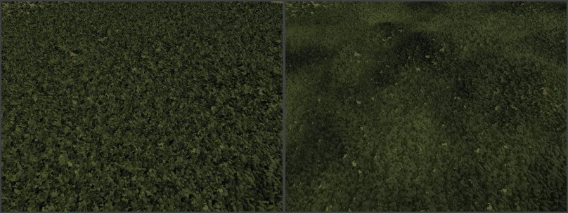

ProcGen Graph Math Nodes
These node types implement math functions for ProcGen graph assets.
Blend Node
The Blend node provides the most common math expressions to combine two values.
Node Properties
Mode: Determines how the two input values get combined.InputA,InputB: Fallback values for pinsAandBrespectively, in case one of the pins isn't connected. Use this, in case you want to combine one value with a constant (e.g. to multiplyAby two, leaveBdisconnected and setInputBto2).ClampOutput: If this is enabled, the output value is clamped to [0;1] range.
Perlin Noise Node
The Perlin Noise node outputs a Perlin Noise value for the current location.
This value can be used to add variety, however, not through completely random values, but rather ones that gradually change. So for instance, if the quality of soil varies, the look of vegetation may be different. However, bushes that grow next to each other are affected the same way, so their look will be similar.
In the two images below, the same plants are placed. However, in the second image, Perlin noise is used to affect their color. Note how in the second image all plants in an area become darker or brighter.

Node Properties
Scale: Over which area the noise is stretched. Large values mean that the noise value changes slowly over large distances, whereas smaller values result in higher frequency noise. If the value is too small for the used object density, the results lose their gradually changing quality.Offset: Pushes the values along the respective axis.NumOctaves: How many Perlin noise values to combine for the final result. More octaves give a more varied pattern and can be scaled across a larger area without showing obvious repetitions, but also cost more performance to evaluate.OutputMin,OutputMax: The output value will be between these two values.
Random Node
The Random node outputs a random number for the current location. The result is deterministic for a given position and seed value, however, contrary to the Perlin noise node, the values for locations right next to each other have no correlation.
This type of noise can be used to add variation between plants, where there is no shared reason for the variation (such as soil quality).
Note:
Properties such as object scale and color variation CAN be controlled through input pins and thus random values can be passed in, however, if no such input is provided, they will already vary randomly between their allowed values. Unless more control is needed, it is therefore not necessary to add and connect a Random node.
Node Properties
Seed: A seed value for the random number generator. If a fixed seed is chosen, the random number output is always exactly the same.OutputMin,OutputMax: The output value will be between these two values.